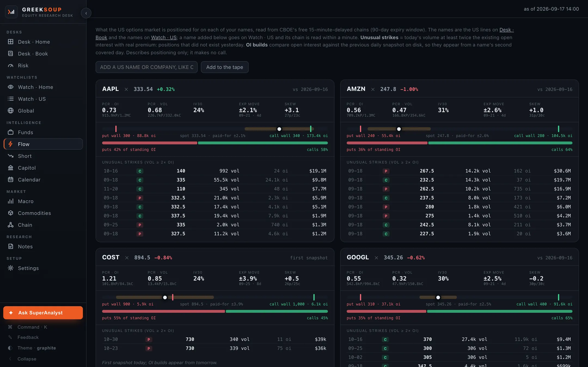

the one-person equity research desk.
Run the whole desk. On your own computer.
Fourteen screens that read your broker, the filings, the options tape and the public record, from Alpha with AI. Open source, your keys stay with you, and it places no orders.

Squeezes tyre makers, and Goodyear files a 1% move as about $8 million a year. Helps rubber plantations and latex processors.
The Commodities screen as it opened on 15 September 2026, with the Natural rubber card open. The live price is the daily read in cents per kilogram; the line behind it is the monthly benchmark in cents per pound, which is where the five-year high sits. Companies on the screens are examples.
what it shows.
Fourteen screens. One desk.
Every screen reads the public record or your own broker, and the source is named on the screen. This is the sidebar of the desk, as it comes out of the download.
Desk · Homebroker key
Your broker account: holdings and cash, and where the broker serves them, futures and margin, priced live.
Desk · USno key
Your US book priced live, the earnings countdown and the insider tape from Form 4 filings.
Desk · Bookno key
A portfolio you keep by hand, in any market, with no broker at all.
Riskno key
The book against its index.
Watch · Homebroker key
Your home-market watchlist, with live ticks in market hours.
Watch · USno key
The US watch grid; a feed key adds the 50 and 200 day columns.
Globalno key
Any symbol from any exchange, one grid.
Fundsno key
The latest 13F of every fund you follow, from SEC EDGAR, with what changed since last quarter.
Flowno key
The options tape on every US name, from CBOE's delayed chains: put/call, the walls, the expected move.
Shortno key
FINRA short interest and the daily short-volume ratio, kept apart on purpose.
Capitolno key
Senate and House trading disclosures on your names, and the members you follow.
Macrono key
Twenty-two FRED series in groups, the home market's own cards and the economic calendar.
Commoditiesno key
Fifty-one commodities, the industries each move squeezes or helps, and the sensitivities companies file.
Chainno key
A value-chain map, priced live.
Any tickerno key
The chart, valuation, quality and insiders on one page; a feed key adds six years of statements and a DCF sandbox.
see it.
Every screen, as it opens.

Flow: the options tape on every US name, from CBOE's delayed chains.
from its own data.
Three things it draws.
Drawn from the desk's own responses, each one dated. They describe positioning and carry no view.
Sorted by the one-year change, with the industries each move squeezes or helps on the card. Prices as the desk read them on 15 September 2026. One benchmark, Coking coal (Australia), has no year of history yet and is left out.
The Funds screen reads every 13F-HR from SEC EDGAR and compares the two latest filings line by line. Berkshire Hathaway's filing for the quarter ending 30 June 2026, filed 14 August 2026, as the desk read it on 13 September 2026.
Flow reads CBOE's free delayed chains and draws where the open interest stands: the strike with the most puts below the price, the strike with the most calls above it, and the move the options market is paying for. Apple, as the desk read it on 15 September 2026.
what it needs.
Twelve of the fourteen run with no key.
A filled mark means the screen runs on that key. A hollow mark means the key adds rows or columns to it.
brokers.
Six connect as it comes, read-only.
Alpaca, ICICI Direct, Interactive Brokers, Tradier, Trading 212 and Zerodha. The market follows the broker, and two markets ship today, India and the United States. Any other broker, and any other market, is one file an AI agent writes to a written contract inside the folder.
Broker guidesyour ai.
Bring your own.
Fourteen providers are preset, local models among them. An Ask box on every screen sends your question with that screen's numbers to your own key, and the desk carries a page any AI agent on your computer can read, so either one answers about your book and not about a stranger's.
Get startedworks with.
Your broker, your AI, the public record.
Picked from a list, nothing assumed. Anything not on it is one file an AI agent writes to a written contract inside the folder.
Financial Modeling Prep is the data provider that ships; another is one file to the same kind of contract. Every source and what it feeds.
install.
Three ways in.
Most readers take the first one. All three end at the same desk, open in your browser.
one line.
Paste one line, press Enter.
- Finds Python on your computer, or installs it
- Downloads the desk into a GreekSoup folder in your home folder
- Sets the desk to start with your computer
- Opens it in your browser at an address only your computer can reach
curl -fsSL https://greeksoup.ai/install.sh | bash
irm https://greeksoup.ai/install.ps1 | iex
Paste it in Terminal on a Mac or PowerShell on Windows, press Enter, and the desk opens in your browser about a minute later.
with an agent.
Let your AI agent set it up.
- Download the folder, unzip it, drag it into Documents
- Open it in Claude Code, Codex, Kimi Code, Grok Build, whichever you use
- Paste the text below; the agent installs what it needs and asks for each key one at a time
Read README.md in this folder and set the desk up for me on this computer. Install what it needs, ask me for each key one at a time and tell me where to get it, and if I say I have no broker to connect, leave the broker keys empty. Then start the desk, set it to start by itself whenever I log in, and tell me the address to open.
from source.
See what the agent does.
- One Python file serves the fourteen screens
- The lists you edit are plain text files in the data folder
- Everything specific to a broker sits in one file per broker
git clone https://github.com/shubhamsborkar/one-person-equity-research-desk.git
cd one-person-equity-research-desk
python3 -m venv .venv && source .venv/bin/activate
pip install -r requirements.txt
python server.py
A Mac, a Windows PC or a Linux computer you leave on while you work, Python 3.10 or newer, found or installed for you, and a browser. Keys are optional; the Settings screen inside the desk takes them and keeps them on your computer. Nothing on this page needs an account.
it stays current.
It updates itself.
Once a day the desk looks at GitHub. When a newer version exists, a strip appears at the top of every screen with the date and what changed, and one click brings it in. Your keys, your lists and any file your agent changed for you stay exactly as they are, and the desk restarts by itself.
releases.
- 2026-09-15.1currentThe site tells a machine what it holds
- 2026-09-15The Ask box: Ask · your AI at the bottom of the sidebar (or ⌘I) opens a box on every screen; your question goes with that screen's own numbers, and
- 2026-09-14What a finished desk carries around the desk itself
- 2026-09-13.8Nothing in the desk assumes one broker or one country any more
- 2026-09-13.7Your broker, your data provider, your AI, all picked from a list with nothing assumed
- 2026-09-13.6Settings grows three sections
Read from VERSION on GitHub, the same file your desk reads when it checks for an update.
what it talks to.
Your broker, the public record, and GitHub once a day.
The desk runs on your computer and answers only to your computer. This is the whole list of places it sends a request. No telemetry, no analytics, no account, and nothing about you or your book goes anywhere.
That is the list. Nothing else.
faq.
Questions readers ask.
Does it cost anything?
No. GreekSoup is open source under the MIT licence. You bring your own keys, and without any key at all twelve of the fourteen screens still run on the free public record.
Does it place orders?
No. This copy reads your broker account and places no orders. If you extend it to trade, that is your own build, under your broker's and your regulator's rules.
Which brokers connect?
Alpaca, ICICI Direct, Interactive Brokers, Tradier, Trading 212 and Zerodha, read-only, as the desk comes. Any other broker that lets a program read your account is one file an AI agent writes to the written contract inside the folder.
Where do my keys live?
In a file inside the GreekSoup folder on your own computer. The Settings screen takes each key and keeps it there. The desk talks to your broker, to the public sources it reads, and once a day to GitHub to check for a newer version.
Which AI can it use?
Any. Fourteen providers are preset, local models among them. An Ask box on every screen sends your question with that screen's numbers to your own key, and any AI agent on your computer can read the desk through a page made for it, so either one answers about your book and not about a stranger's.
Which markets?
The market follows the broker. India and the United States ship today, and another market is one short file to a written contract. Global takes any symbol from any exchange, and a reader with no broker names a home market in Settings.
What does it run on?
Mac, Windows and Linux. It needs Python 3.10 or newer, which the one-line install finds or installs for you, and a browser. The desk opens at an address only your own computer can reach.
Does it send anything anywhere?
Your broker, the public sources, your data provider and your AI if you connected them, and GitHub once a day to check for a newer version. No telemetry, no analytics, no account. The whole list.
Can I go back to a previous version?
Yes. The desk keeps the files each update replaced, for the last three versions. Tell your agent to go back to the previous version of the desk, and it does; the Updates page in the docs has the one line for doing it yourself.
How do I change it?
Open the folder in an AI agent, Claude Code, Codex, Kimi Code, Grok Build or whichever you use, and describe what you want. That is how the desk was built, and the README inside the folder is written for the agent as much as for you.
from alpha with ai.
For analysts who refuse to settle.
GreekSoup is the research desk we use every day, built with Claude Code from plain-English descriptions and published so that you can run the same desk on your own computer, with your own keys, and change it by describing what you want. The edition that walks through every screen and the build is on the newsletter.